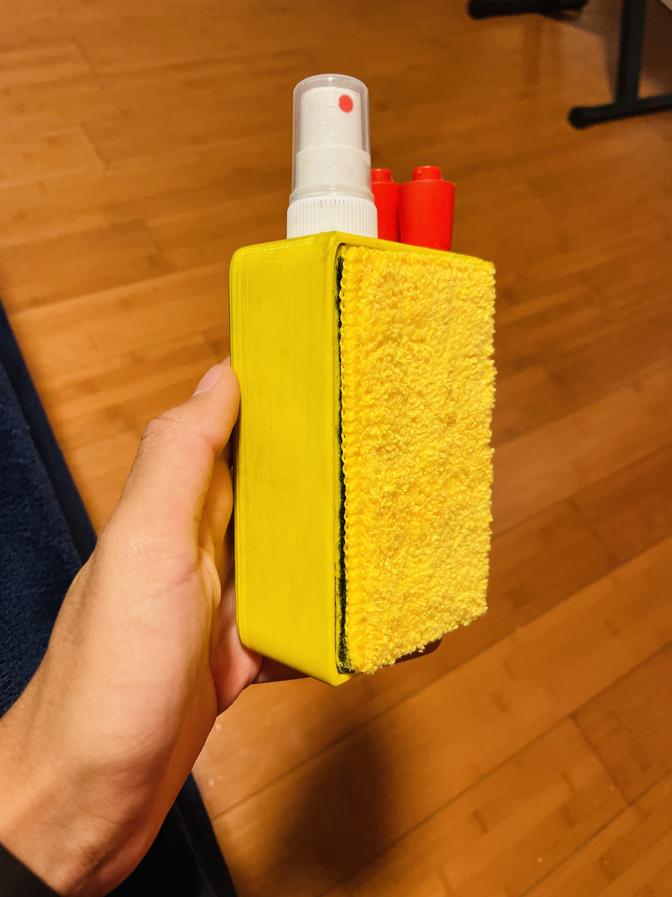
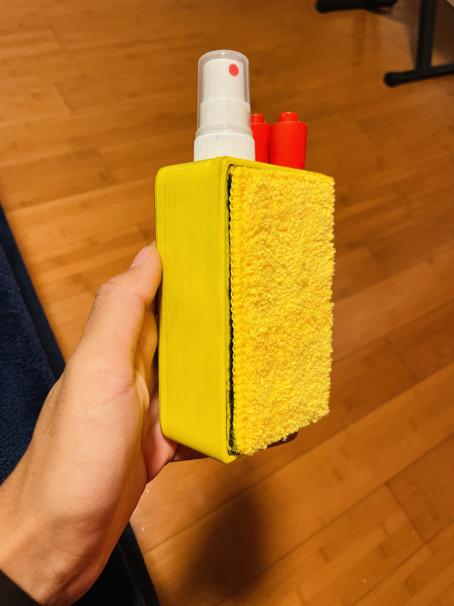

Within this project, we were given the flexibility to work with anyone we wanted and build anything we wanted to help solve an issue in the world. My group and I decided to innovate the functionality of a whiteboard eraser. Although this seems like a very effective and useful product, we decided to implement storage for markers, a replaceable cloth, and a built-in spray on our model. We 3D printed our design and our model worked very effectively which was fantastic. In fact, we were also nominated for the top 8 projects in the entire grade which was amazing. This project allowed us to utilize all the information we learnt throughout the year and use the I-STEM toolkit to show our learning and thinking process.